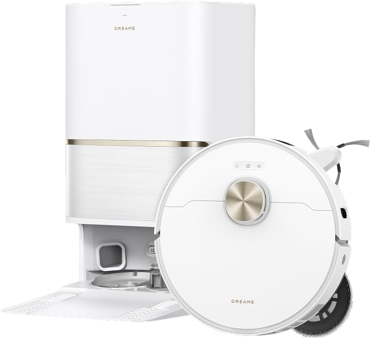
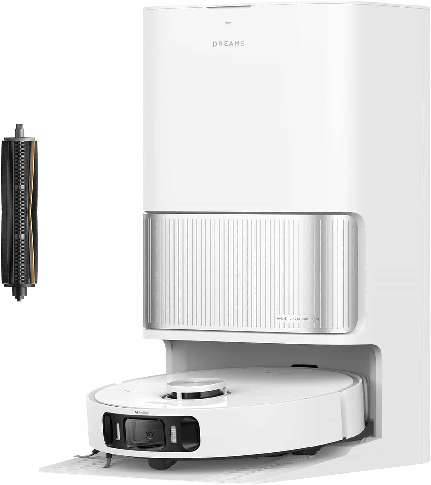
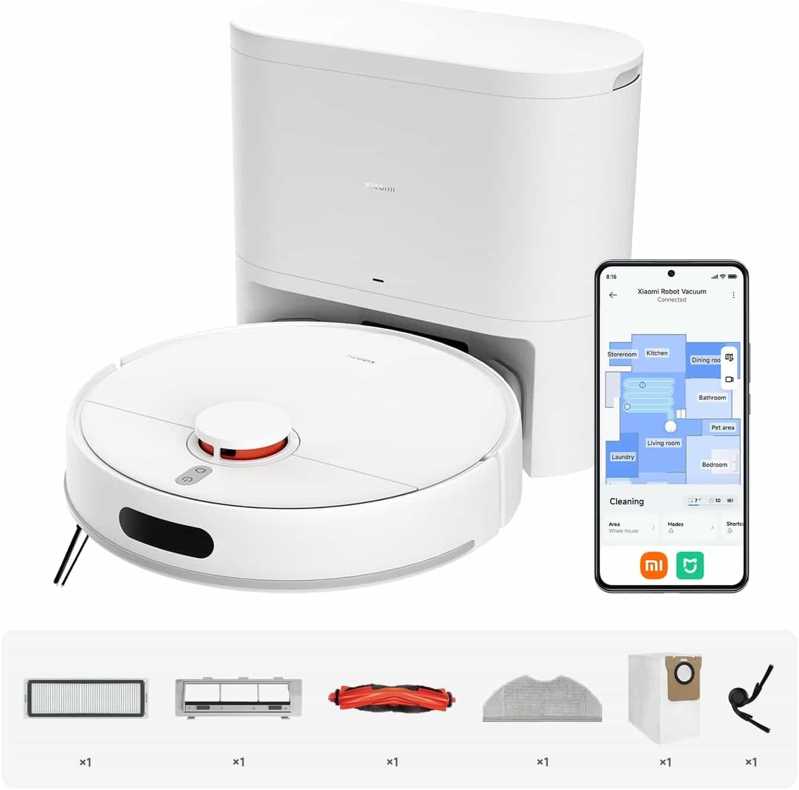
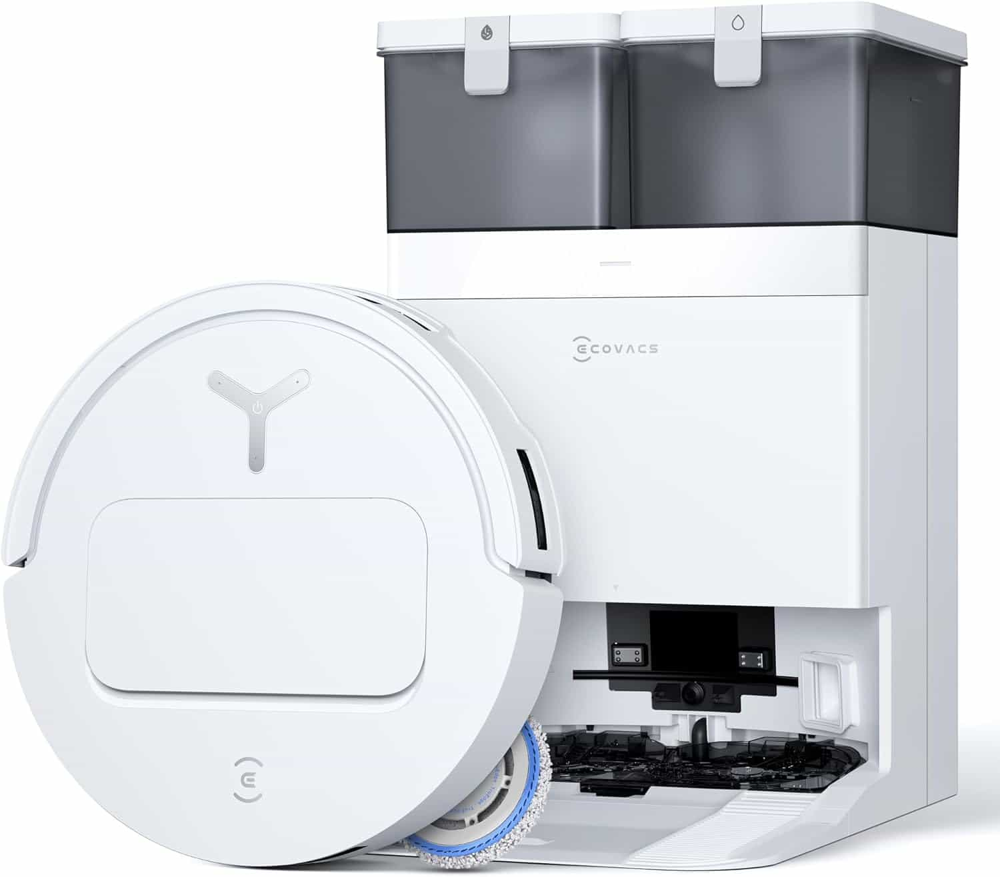
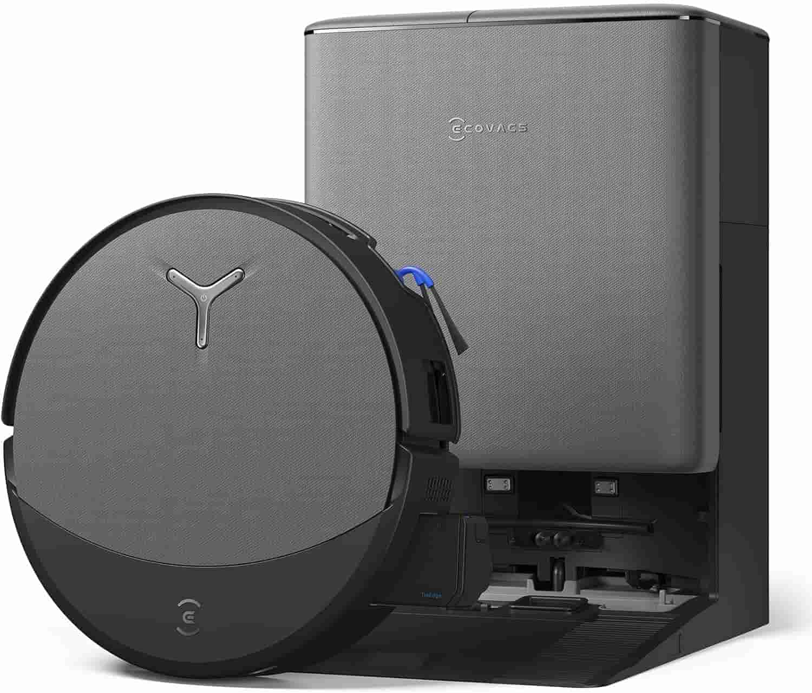
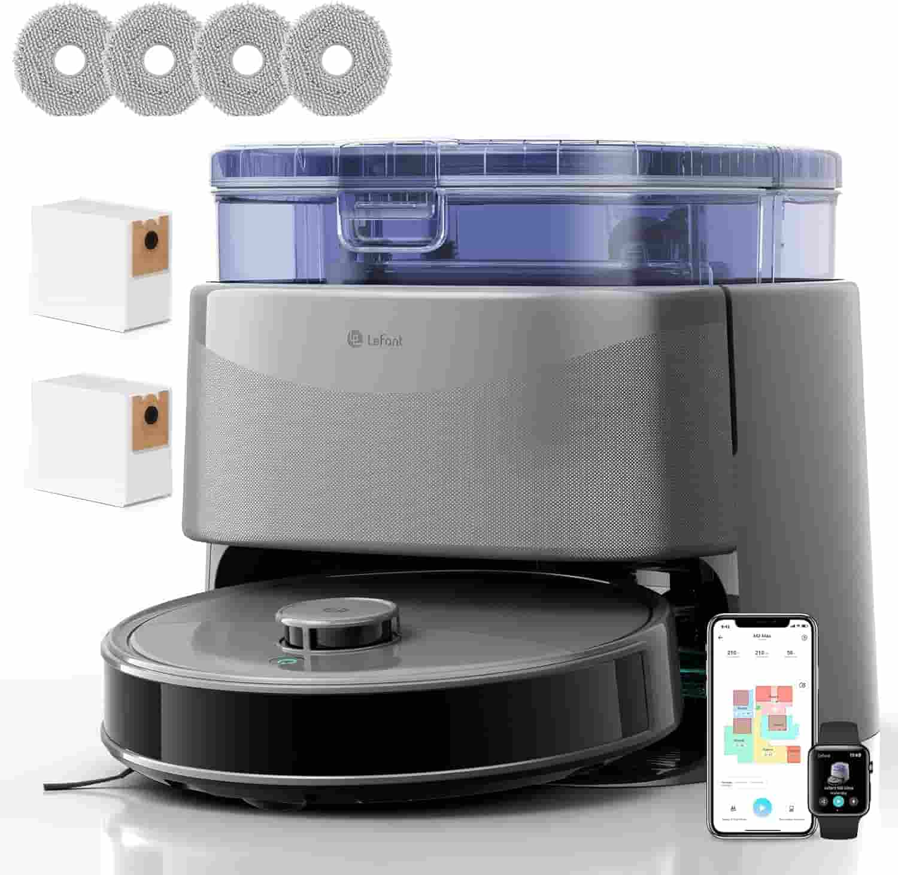

Robot lavapavimenti automatici
L'evoluzione della pulizia smart
Negli ultimi anni, la gestione delle faccende domestiche ha subito una vera rivoluzione grazie ai robot lavapavimenti con stazione di svuotamento automatico. Quello che un tempo era considerato un gadget di lusso, oggi è diventato un elettrodomestico essenziale per chi cerca di ottimizzare il proprio tempo senza rinunciare all'igiene. L'adozione massiccia di questi dispositivi è dovuta alla loro capacità di diventare completamente autonomi: non si limitano più a raccogliere la polvere, ma grazie a tecnologie come il lavaggio moci con acqua calda e i sistemi di navigazione laser, garantiscono una pulizia profonda su ogni superficie. Che tu abbia un appartamento moderno o una casa su più livelli, scegliere un robot aspirapolvere per pavimenti duri e tappeti significa delegare la fatica quotidiana a un assistente intelligente capace di mappare ogni angolo con precisione millimetrica.

Dreame L50 Ultra AE: Potenza Estrema e Igiene a 100 °C
Il Dreame L50 Ultra AE ridefinisce gli standard della pulizia domestica automatizzata, combinando una potenza di aspirazione senza precedenti con un sistema di lavaggio igienizzante avanzato. Con una forza aspirante di ben 28.000 Pa, questo robot è in grado di rimuovere con facilità polvere, detriti e peli di animali da ogni tipo di superficie, inclusi i tappeti più folti. La vera rivoluzione risiede però nella sua stazione all-in-one: dopo ogni ciclo di pulizia, il robot non solo provvede all'auto-svuotamento della polvere, ma effettua un’auto-pulizia dei moci con acqua calda a 100 °C, garantendo l'eliminazione totale di batteri e cattivi odori. La navigazione intelligente è affidata a un sistema di rilevamento degli ostacoli e visione a 360°, che permette al robot di mappare con precisione millimetrica l'abitazione ed evitare mobili o oggetti sparsi sul pavimento, anche in condizioni di scarsa luminosità. Il sistema di lavaggio dinamico assicura una pressione costante sulle macchie più ostinate, lasciando i pavimenti brillanti e asciutti in tempi record. Grazie alla gestione completa tramite app e alla compatibilità con gli assistenti vocali, il Dreame L50 Ultra AE è l'investimento perfetto per chi cerca una casa sempre impeccabile senza muovere un dito, godendo del massimo livello di automazione e igiene professionale.
Vedi su Amazon
Dreame L40 Ultra AE: Pulizia Millimetrica e Igiene Termica
Il Dreame L40 Ultra AE rappresenta l'equilibrio perfetto tra potenza bruta e precisione chirurgica nella pulizia della casa. Dotato di una straordinaria capacità di aspirazione da 19.000 Pa, questo robot cattura sporco e detriti da ogni fessura, assicurando prestazioni eccellenti su pavimenti duri e tappeti. La sua caratteristica distintiva è il sistema di moci e spazzole flessibili: il robot è in grado di estendere i componenti di lavaggio per raggiungere angoli e bordi solitamente inaccessibili, garantendo una copertura totale della superficie domestica senza lasciare zone scoperte. La gestione post-pulizia è completamente delegata alla stazione intelligente, che include la funzione di auto-svuotamento della polvere e l'innovativo sistema di auto-pulizia dei moci con acqua calda a 75°C. Questo processo termico non solo scioglie le macchie di grasso accumulate durante il lavaggio, ma igienizza profondamente i tessuti, prevenendo la formazione di muffe e cattivi odori. Grazie alla navigazione laser avanzata e al rilevamento ostacoli potenziato dall'intelligenza artificiale, il Dreame L40 Ultra AE si muove con agilità in ambienti complessi, offrendo un'esperienza di pulizia completamente autonoma, igienica e senza compromessi.
Vedi su Amazon
Xiaomi Robot Vacuum H40: Potenza e Precisione per una Casa Impeccabile
Lo Xiaomi Robot Vacuum H40 è la soluzione all-in-one definitiva per chi cerca un'aspirazione profonda e un lavaggio accurato dei pavimenti in un unico dispositivo intelligente. Grazie a una potenza di aspirazione di 10.000 Pa, questo robot è progettato per gestire con estrema facilità lo sporco quotidiano, risultando particolarmente ideale per tappeti a pelo corto e pavimenti duri, dove riesce a rimuovere anche la polvere più fine annidata nelle fughe. La sua tecnologia di mappatura ad alta precisione LDS (Laser Distance Sensor) gli permette di scansionare l'ambiente a 360°, creando mappe dettagliate della casa per ottimizzare i percorsi di pulizia ed evitare ostacoli con estrema agilità. Oltre all'aspirazione, lo Xiaomi H40 offre un sistema di lavaggio integrato che mantiene i pavimenti lucidi e igienizzati senza sforzo. La gestione tramite l'app dedicata permette di personalizzare ogni aspetto della pulizia: potrai impostare aree vietate, programmare orari specifici e regolare l'intensità del flusso d'acqua in base alla stanza. Grazie al suo design compatto e funzionale, il robot è in grado di infilarsi sotto la maggior parte dei mobili, garantendo una pulizia completa anche nei punti più difficili da raggiungere. È lo strumento perfetto per chi desidera un’automazione domestica affidabile, potente e tecnologicamente avanzata, in pieno stile Xiaomi.
Vedi su Amazon
Ecovacs DEEBOT T50 PRO OMNI Gen2: Potenza e Design Ultra-Sottile
Il DEEBOT T50 PRO OMNI Gen2 rappresenta l'evoluzione definitiva della pulizia intelligente, superando le prestazioni del già noto T30 PRO. Con una potenza di aspirazione monumentale di 21.000 Pa, questo robot agisce come un vero uragano su polvere e detriti, garantendo al contempo un ambiente libero da grovigli grazie alla tecnologia ZeroTangle 2.0. Quest'ultima, con la sua struttura a tripla forma di V, è progettata per districare attivamente i capelli e i peli di animali, assicurando un'efficienza del 100% anche in presenza di capelli lunghi. La vera rivoluzione estetica e funzionale è il suo profilo ultra-sottile da soli 81 mm: grazie all'integrazione del modulo LiDAR dToF direttamente nel corpo, il robot scivola agevolmente sotto divani e mobili bassi dove altri modelli falliscono. La tecnologia TruEdge 2.0 porta la pulizia dei bordi a un nuovo livello, combinando una spazzola laterale estensibile e un mocio che mantiene una distanza di appena 1 mm dai battiscopa. Il tutto è coordinato dalla Telecamera 3D AIVI 3.0, che riconosce gli ostacoli in tempo reale e mappa la casa con una precisione chirurgica. La gestione è totalmente autonoma grazie alla Stazione OMNI all-in-one, che non solo svuota la polvere, ma lava i moci con acqua calda a 75°C, li asciuga con aria calda e aggiunge automaticamente la soluzione detergente. Potrai controllare ogni fase tramite l'assistente vocale YIKO, capace di comprendere comandi complessi e conversazioni naturali. Con il DEEBOT T50 PRO, la tecnologia si mette al servizio del massimo comfort domestico, unendo un design elegante a prestazioni industriali.
Vedi su Amazon
Ecovacs DEEBOT T90 PRO OMNI: La Rivoluzione da 30.000 Pa con AI Avanzata
Il DEEBOT T90 PRO OMNI non è solo un robot, ma un concentrato di tecnologie d'avanguardia progettato per chi non accetta compromessi. Con una potenza di aspirazione senza precedenti di 30.000 Pa supportata dal sistema BLAST, questo modello elimina il 100% dei residui, mantenendo un livello di rumorosità sorprendentemente basso grazie alla tecnologia di ottimizzazione acustica. La vera innovazione risiede nel sistema di lavaggio OZMO ROLLER 3.0: un rullo da 27 cm che ruota a 200 giri/min, supportato dalla tecnologia TruEdge 3.0, che permette di pulire i bordi con una precisione millimetrica grazie a un sistema sospeso su cuscinetti ad aria. Pensato per le grandi abitazioni, il T90 PRO introduce la ricarica PowerBoost: un algoritmo intelligente che ripristina il 10% della batteria in soli 3 minuti durante le pause tecniche, permettendo di coprire superfici fino a 500 m² senza interruzioni. Anche la mobilità è stata rivoluzionata: il sistema TruePass a 4 ruote motrici consente al robot di superare ostacoli e gradini fino a 4 cm, mentre la navigazione AIVI 3D 4.0 riconosce in tempo reale oggetti delicati come i cavi, mantenendo una distanza di sicurezza costante. L'igiene è garantita dal sistema Fresh-Flow, che eroga acqua pulita a 75 °C attraverso 32 ugelli di precisione, abbinato all'erogazione automatica del detergente per sgrassare a fondo ogni superficie. Il cuore pulsante del dispositivo è l'AGENTE YIKO AI, un assistente virtuale evoluto capace di identificare autonomamente le zone frequentate da animali domestici, adattando la pulizia per evitare i tuoi amici a quattro zampe e concentrando l'aspirazione dove serve di più. Con il sistema Triple Lift, che solleva moci e spazzole in modo indipendente per separare perfettamente secco e umido, il T90 PRO OMNI è la scelta definitiva per una casa sempre impeccabile.
Vedi su Amazon
Lefant M3 Ultra: Potenza Ciclonica e Navigazione Laser dToF
Il Lefant M3 Ultra si inserisce nel mercato dei robot top di gamma con una forza aspirante impressionante di 23.000 Pa, progettata per estrarre polvere e detriti anche dai tappeti più spessi. Grazie alla spazzola centrale a V dotata di sistema anti-groviglio, questo modello è la scelta ideale per chi convive con animali domestici, poiché separa i peli e i capelli durante la rotazione evitando fastidiosi blocchi meccanici. La navigazione è affidata al sensore LiDAR dToF a 360°, che permette una mappatura multi-livello rapida e precisa, ideale per gestire abitazioni su più piani senza perdere l'orientamento. Il sistema di lavaggio non è da meno: il dispositivo utilizza doppi mop rotanti a 200 giri/min che esercitano una pressione costante per eliminare macchie ostinate e residui oleosi. Un sensore intelligente rileva i tappeti, attivando il sollevamento automatico dei mop di 9 mm per evitare di bagnare le superfici tessili. Inoltre, grazie ai sensori PSD a 190° e alla tecnologia FreeMove, il robot si muove con agilità anche sotto i mobili e in presenza di oggetti scuri o metallici, riducendo al minimo gli urti e gli incastri. La manutenzione è ridotta ai minimi termini grazie alla stazione All-in-One: il sacco da 3,2L garantisce settimane di autonomia per lo svuotamento della polvere, mentre i mop vengono lavati automaticamente con acqua a 75°C per sciogliere i grassi e igienizzare i tessuti. Con un'autonomia che raggiunge i 210 minuti e il supporto per WiFi Dual Band (2.4G/5G), il Lefant M3 Ultra si integra perfettamente in ogni smart home, offrendo una pulizia profonda, silenziosa e completamente automatizzata.
Vedi su Amazon